Networking Fundamentals I: Physical Connectivity & Network Types
The world before networking
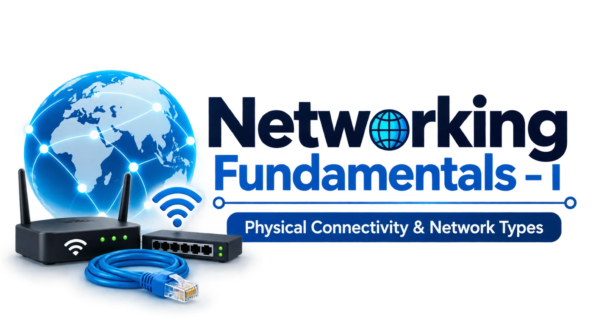
A standalone computer works entirely on its own, with no connection to any other device. It can still do a lot: write documents, run calculations, play music. But everything it uses must already be inside it. It cannot ask another computer for a file, and it cannot print on the printer sitting on someone else’s desk. Its own files, storage, printers and applications are the only resources it can reach.
How people shared data
To move a file you had to physically carry it on portable storage:
Floppy disks
Early magnetic disks with very small capacity.
CDs / DVDs
Optical discs that held more than floppies.
USB drives
Small pluggable flash storage, still common today.
External drives
Larger portable hard drives for bigger files.
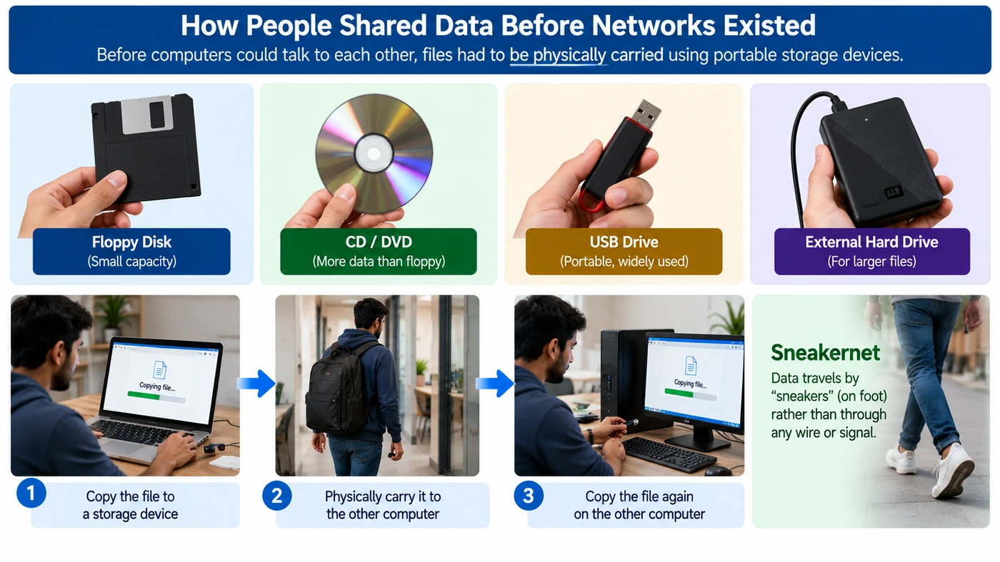
The common pattern is simple: copy the file onto a device, physically walk it over to the other computer, and copy it again.
The problems isolated computers created
As more computers came into homes, offices and schools, the limits of the “carry it over” approach became obvious:
| Problem | What it looked like |
|---|---|
| Difficult file sharing | Every transfer meant physically moving a storage device. |
| Duplicate copies | Files were copied rather than accessed directly, so each computer kept its own separate version, and the versions easily became inconsistent with each other. |
| Repeated manual effort | Even the smallest exchange needed a person to carry something. |
| Hard to collaborate | Two people could not work on the same document at the same time. |
| Hard to share hardware | Only one PC had the printer, so everyone else carried files to it. |
| No central access | No single place where everyone could fetch shared information. |
| Growing management pain | As the number of computers in an office or home grew, manually keeping track of who has which file, and moving data between more and more machines, became harder and harder. |
All of these point to one idea: computers should exchange data and share resources directly, without a person in the middle. That is the birth of computer networking, so that data can be shared instantly and resources (one printer, one storage box, one internet connection) can serve many computers. The question “How can computers communicate directly?” drives this entire module.
From two computers to a computer network
The simplest network is two computers joined by a cable. One is the sender (gives out information), the other is the receiver (gets it), and whatever carries the data between them is the communication medium.
More than two computers
Real homes, offices and schools have far more than two computers. When more join, some new vocabulary helps:
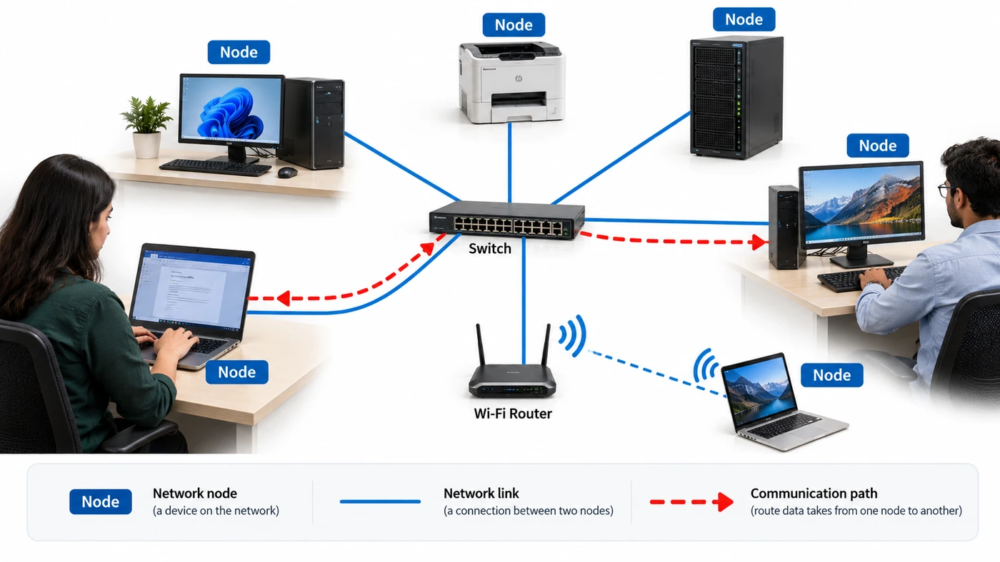
Node
Any device connected to the network: PC, phone, printer, server.
Link
One physical or wireless connection between two nodes.
Communication path
The full route data takes from one node to another, possibly over several links.
As soon as there are three or more computers, a new question arises: how exactly should they all be connected?
Why “cable everyone to everyone” fails
One idea: run a separate cable between every pair of computers (a full mesh). Two computers need 1 cable, three need 3, but the count explodes. For n computers you need n × (n − 1) ÷ 2 cables.
This creates serious practical issues:
- Managing a huge number of cables becomes physically and logistically difficult.
- Adding a single new computer means creating a brand-new direct connection to every existing computer.
- Troubleshooting becomes far harder, since there are so many individual connections to check.
So we need a more centralized way to connect many computers. That need produces the network devices in the next sections.
Definition
A computer network is a group of two or more computers (or other devices) connected together so they can communicate and share resources such as files, applications and hardware. Three ingredients:
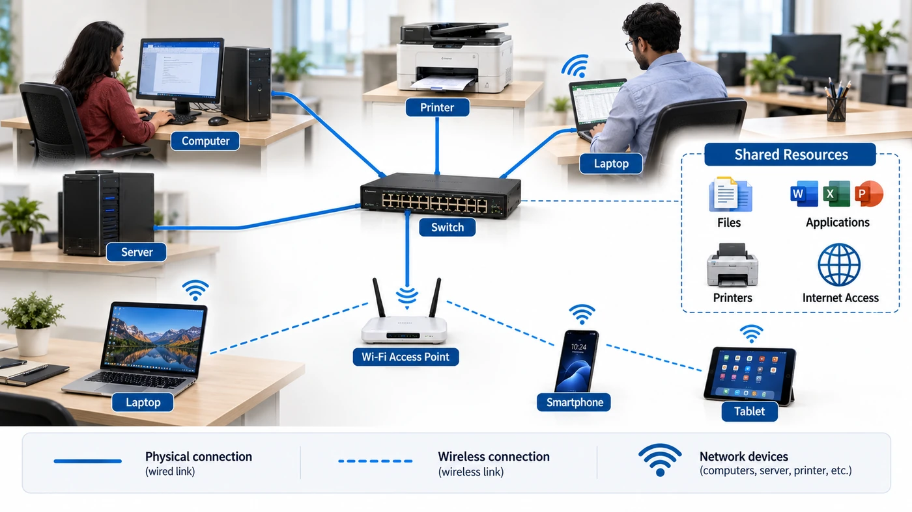
What networks are actually used for
Brought back to everyday value, networks are used because they enable:
File sharing
Open or transfer files directly, no pen drives.
Hardware sharing
One printer, scanner or storage box for many PCs.
Apps & services
Use software hosted elsewhere, e.g. a shared database.
Communication
Messages, email and calls between people.
Centralized services
Keep important data in one place everyone can reach.
Internet access
Join the global network of networks.
Now that you know what a network is and why we use it, the next question is: how does a computer connect to one?
How a computer physically connects
Before a computer can send anything, it needs a network interface: a doorway between the computer and the network. Without one, a computer is stuck being standalone, even if other computers sit right next to it.
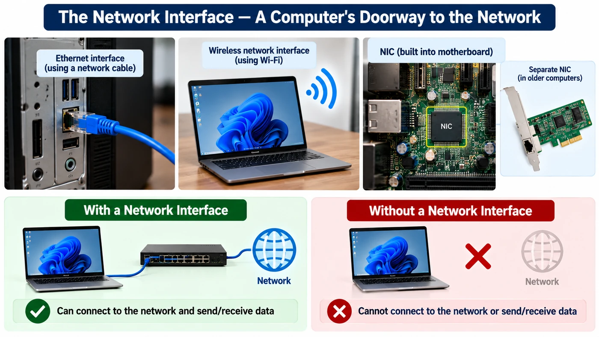
The hardware is the Network Interface Card (NIC). In old computers it was a separate card plugged in; today it is usually built into the motherboard (the main board inside the computer), but we still call it a NIC. It comes in two flavours:
Ethernet interface
For connecting with a network cable. You see its square socket on laptops, desktops and servers.
Wireless interface
For connecting without a cable, using Wi-Fi radio signals. Built into every phone and laptop.
The three ways bits travel
Wired networking
Devices are joined by cables. The most common standard for wired local networks is Ethernet, which defines how devices format and send data over the cable. Copper cables carry electrical signals and are inexpensive; fiber-optic cables carry light through thin glass or plastic strands, giving much higher speeds over much longer distances at a higher price. Wired is the choice for offices, data centers and anywhere a stable, fast, always-on connection matters more than moving around.
Wireless networking
Devices talk over radio signals with no cable. The familiar form is Wi-Fi: laptops and phones join as long as they are within range. Because it uses radio, the device needs a wireless network interface, not an Ethernet one. Wireless suits homes, cafes, public spaces and anything that moves.
| Aspect | Wired | Wireless |
|---|---|---|
| Physical connection | Needs a cable | No cable; radio signals |
| Mobility | Stays where the cable reaches | Moves freely within range |
| Speed | Generally faster and more stable | Can be slower and less consistent |
| Reliability | Little interference | Affected by walls, distance, interference |
| Typical use | Offices, data centers, fixed desktops | Homes, public spaces, mobile devices |
Hub: the first central box
The fix for the cable explosion is a central device: every computer connects to it once, and the device takes care of getting data to the right place. This is called a star layout. The earliest such device was the hub.
All the computers connect to the hub, which greatly reduces the number of cables needed and makes the network easier to connect. But if Computer A sends data to Computer C, the hub sends it to Computer B, Computer C, Computer D and every other connected computer. C uses the data because it is meant for it; the others ignore it.
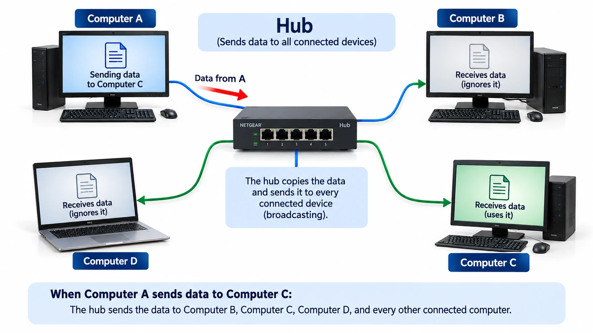
Problems with a hub
Wasted traffic
Every PC receives data that isn’t for it.
Slow when busy
All devices share one connection, so they wait their turn. More devices, slower network.
Collisions
Two PCs sending at once interfere with each other, and both must wait and resend.
Privacy risk
Data reaches devices it wasn’t meant for. They normally ignore it, but they could read it.
Because of this, hubs are basically not used in modern networks. They were replaced by the switch.
Switch: a smarter central box
From outside a switch looks like a hub: a box with many sockets (ports). Inside, it is smarter: a switch sends data only out of the port where the intended receiver is connected.
How does it know? Every network interface has a unique hardware ID called a MAC address (the next note explains it fully). The switch remembers which MAC address lives on which port in a small table, then uses that table to forward each piece of data to exactly one port. A port is the socket on the switch where a network cable plugs in.
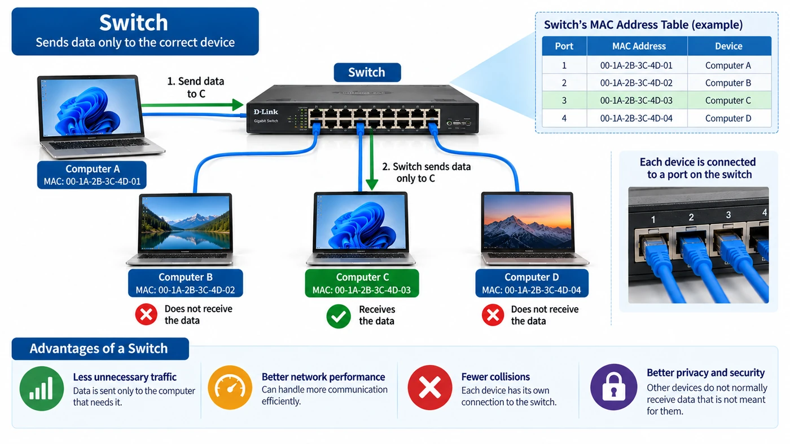
Why a switch beats a hub
Less traffic
Data normally goes only to the device that needs it.
Better performance
Many conversations can happen at once without flooding everyone.
Far fewer collisions
Each device gets its own connection to the switch.
Better privacy
Other PCs don’t normally receive your data.
Switches are what modern wired networks use to connect computers, printers and servers within the same local network.
Router: connecting different networks
A switch connects 20 PCs in a college lab to each other. But when a student opens YouTube or sends a WhatsApp message, the other end is not inside the lab’s network. A switch alone cannot send data to a different network. A router’s job is to connect different networks and move data from one network to another.
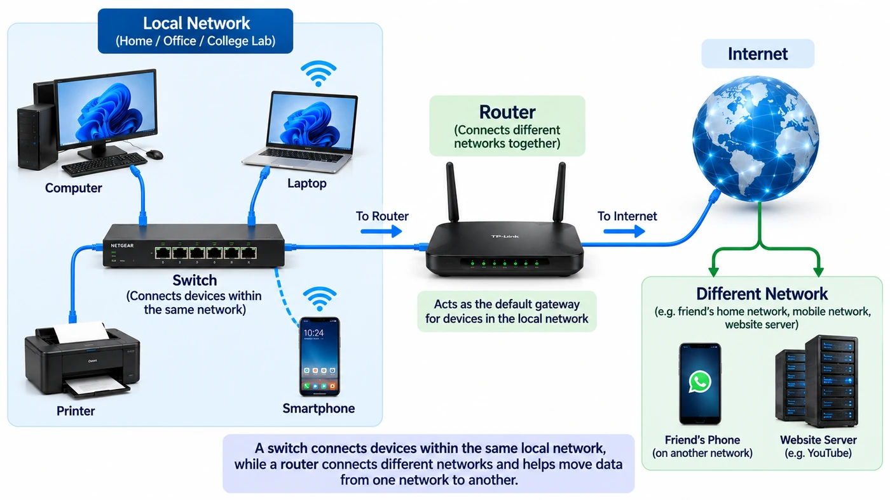
Example: on your home Wi-Fi you send a WhatsApp message to a friend. Your phone is on your home network; your friend’s phone is on a different one (their home Wi-Fi or mobile network). Your phone cannot connect directly to that network, so the data first goes through your router, which moves it from your home network toward the other network.
The default gateway
When a device wants to reach something outside its own network, it hands the data to a device that can carry it to other networks: a gateway. At home and in offices the router plays this role, and because it is the gateway your device normally uses, it is called the default gateway.
Your laptop first checks whether the destination is on your own local network. Your friend’s phone isn’t, so the laptop sends the data to the default gateway (usually your home router), which sends it on toward the other network so it eventually reaches your friend.
Routing
The router’s decision about where to send data next is called routing. To decide, it looks at the destination’s network-layer address (the IP address, explained in the next note). A switch, by contrast, mainly uses the MAC address to deliver within one local network. Routing tables and how routers choose paths come in a later, dedicated module.
Switch
Connects devices within the same local network. Uses MAC addresses.
Router
Connects different networks and moves data between them. Uses IP addresses.
Modem: talking to your Internet provider
Your router moves data toward other networks, but your home network still needs a link to your Internet Service Provider (ISP), the company that sells you Internet access, such as Jio, Airtel or BSNL. That link usually enters your home as a fiber cable, cable line or telephone line.
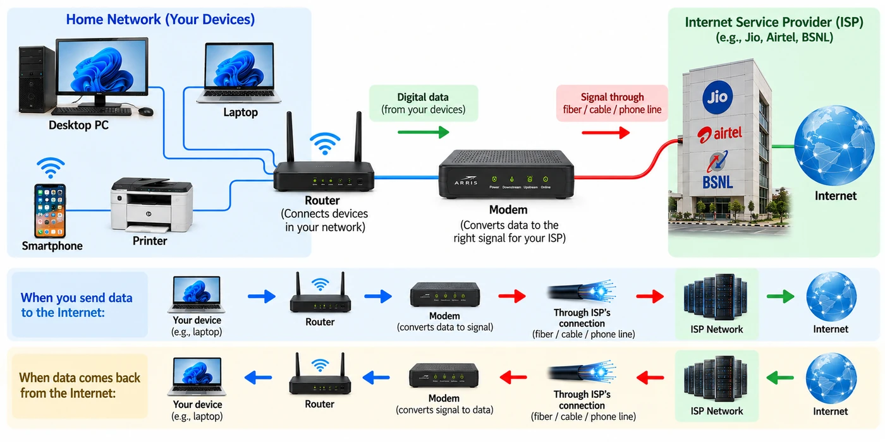
Your computer or phone works with digital network data, but the ISP’s connection carries it as a particular type of signal. The modem changes the data into that signal on the way out, and does the opposite conversion when data comes back:
Modem vs router
Many home boxes contain both, so people use the words interchangeably, but they do different jobs:
| Aspect | Modem | Router |
|---|---|---|
| Main role | Connects your network to the ISP and converts data into the right signal for the ISP’s line | Connects different networks and sends data in the right direction |
| Works with | The ISP’s connection type: fiber, cable, telephone line | Network addresses that identify networks and devices |
| Without it | No link to the ISP over a line that needs a modem | Nothing to forward data properly between networks |
Wireless access point, and the all-in-one home box
A switch is great for wired devices. For phones and laptops on Wi-Fi you need a Wireless Access Point (AP). It broadcasts a Wi-Fi signal that wireless devices (Wi-Fi clients) join, extending the wired network out into the air around it.
Access point
Lets wireless devices join the network.
Router
Directs traffic between different networks.
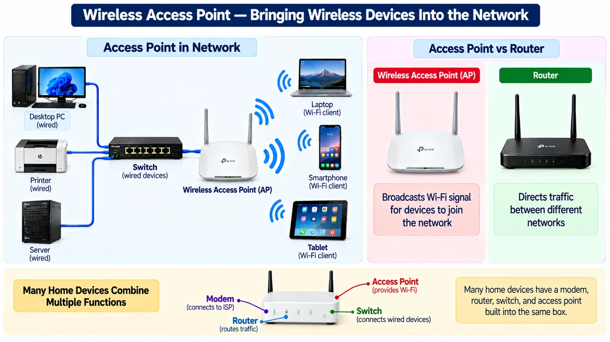
| Device | Job in one line | Works with |
|---|---|---|
| Hub | Repeats data to every port | Nothing (no addresses) |
| Switch | Delivers to the right device in the same network | MAC addresses |
| Router | Moves data between different networks | IP addresses |
| Modem | Converts data ↔ line signal for the ISP | Fiber, cable or phone line |
| Access point | Lets Wi-Fi devices join the network | Radio signals |
LAN vs WAN: the one rule
Now zoom out. Different situations need different setups, so we classify networks. Beginners are often handed a long list (LAN, WAN, MAN, PAN, CAN…) to memorize as unrelated categories. The course’s simpler view: there are really two fundamental types, and everything else is one of them at a different scale, or a related idea.
LAN-style: no public Internet involved
Definition (course rule): any situation where two or more devices communicate without the Internet being involved at all. Distance does not matter: the same desk, or a thousand kilometres apart on a company’s own private cable.
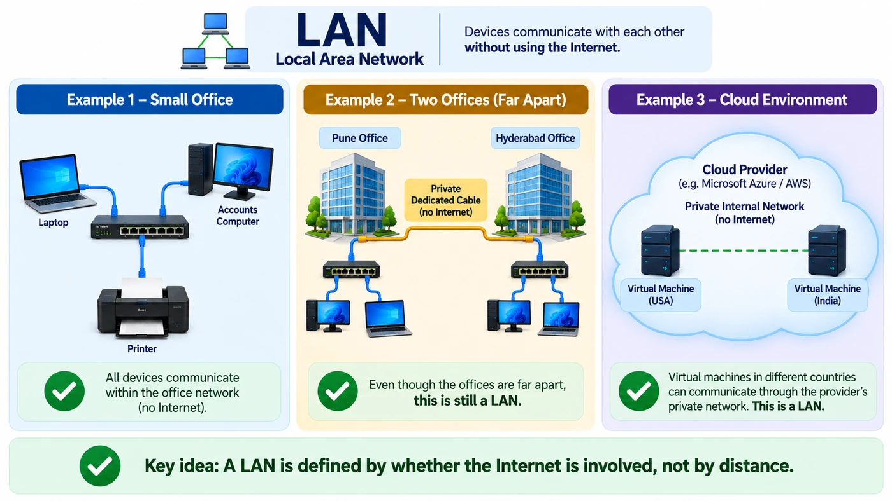
- 1The textbook caseAt Ravi Electronics in Pune, a laptop, the office printer and the accounts PC share one switch. A print job goes straight across the office network and never touches the Internet. A classic LAN. → LAN
- 2The surprising caseRavi Electronics opens a second office in Hyderabad and links the two with its own private cable that never passes through the public Internet. Hundreds of km apart, yet the traffic stays private. → private (textbook: private WAN)
- 3The cloud caseFlipkart runs two virtual machines in two different countries on Azure or AWS, and they talk over the cloud provider’s private internal network, not the public Internet. → private network
WAN: the public Internet is involved
Definition (course rule): any situation where devices communicate through the Internet. Distance is irrelevant: if the Internet is involved, it is a WAN, even if the devices are inches apart.
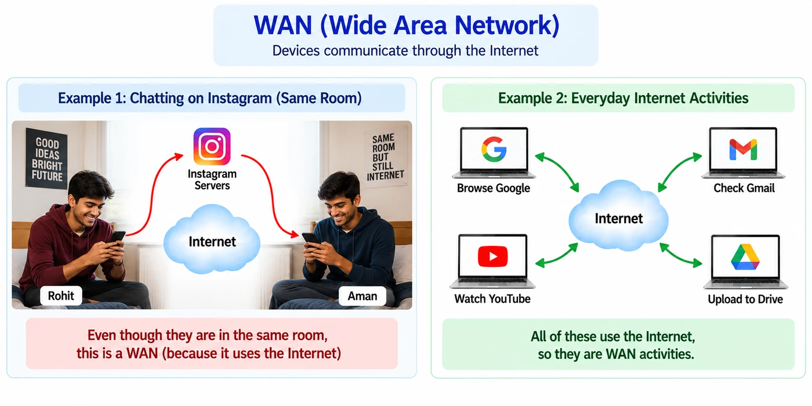
Rohit and Aman sit in the same hostel room in Bengaluru, chatting on Instagram. The messages do not hop from phone to phone. Each one goes out through Rohit’s mobile network, across the Internet to Instagram’s servers (which could be anywhere in the world), and back down to Aman. Because the conversation depends on the Internet, it is a WAN conversation, even though the two are a metre apart.
The same goes for nearly everything you do daily: opening Google, checking Gmail, watching YouTube, uploading to Google Drive. All depend on the public Internet.
Quick comparison: LAN vs WAN
| Point | LAN | WAN |
|---|---|---|
| Course rule | Communication avoids the public Internet | Communication depends on the public Internet |
| Textbook definition | Small area: home, office, building | Large area: cities, countries, the world |
| Examples | Office laptop → printer through a switch | Instagram chat in the same room; Gmail; Google search |
| Physical distance (course rule) | Irrelevant: one room or two cities | Irrelevant: one room or the whole world |
| Correct way to think | Defined by how the data travels, not where the devices are | Defined by dependence on the Internet, not by distance |
| Common wrong belief | “Two nearby devices always talk over the LAN” | “Only far-apart devices use the WAN” |
PAN, LAN, CAN, MAN: the same idea at different sizes
Terms like MAN and PAN are not brand-new kinds of network. They are private, local-style networks described by how much area they cover. The idea stays the same; only the size changes. MAN and CAN are scaled-up LANs (a city; a university or corporate campus with several buildings), and a PAN is a scaled-down LAN covering just your immediate personal space.
PAN · Personal Area Network
The smallest: your own devices connected directly over a few metres, e.g. phone ↔ Bluetooth earbuds, smartwatch syncing with your phone. No Internet needed.
LAN · Local Area Network
A small area such as one office, home or building.
CAN · Campus Area Network
Several buildings of the same organization on one campus, joined into one private network. Bigger than a LAN, smaller than a MAN. Example: TCS Siruseri in Chennai.
MAN · Metropolitan Area Network
Several LANs joined privately across a city, e.g. Infosys linking three Bengaluru offices with its own fiber, with no traffic over the public Internet.
ISP, Internet, Intranet and the Web
A few more words describe how networks connect to each other and what runs on top of them:
ISP
Internet Service Provider: the company and infrastructure (Jio, Airtel, BSNL) that connects your LAN to the wider Internet.
The Internet
The enormous global network of interconnected networks: the infrastructure that lets data travel between devices anywhere.
Intranet
A private, organization-only network built with Internet-style technology (websites, portals) but open only to its own people.
The Web (WWW)
Not a network at all: a service of linked websites stored on web servers and viewed in browsers, running on top of the Internet.
Internet vs World Wide Web
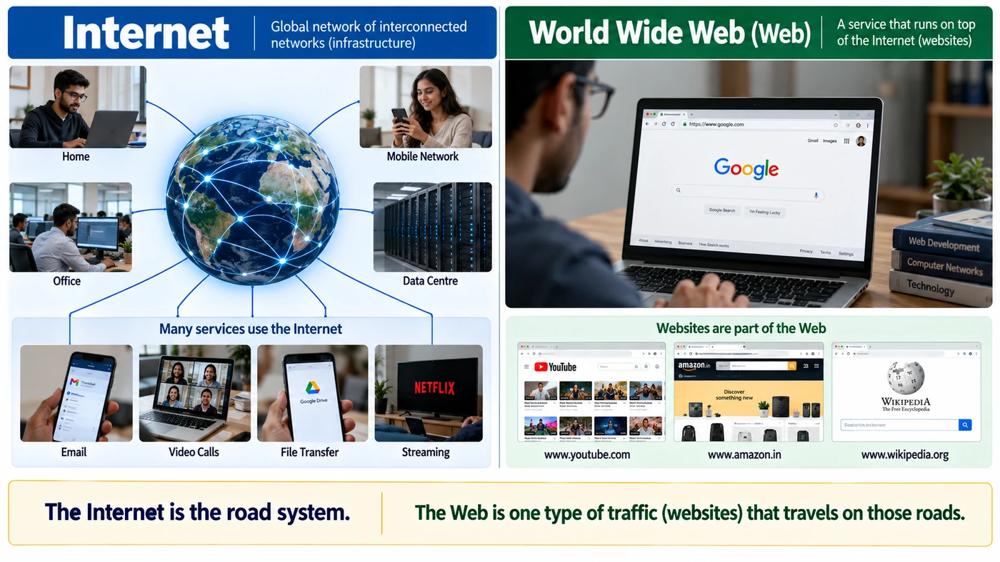
Every term on one page
| # | Term | What it actually is |
|---|---|---|
| 1 | LAN | Fundamental type: local, private communication with no public Internet involved |
| 2 | WAN | Fundamental type: communication across wide areas, typically over the Internet |
| 3 | MAN | Not a new type: the LAN idea at city scale |
| 4 | CAN | Not a new type: the LAN idea at campus scale |
| 5 | PAN | Not a new type: the LAN idea at personal, short-range scale |
| 6 | ISP | Infrastructure that connects a LAN to the wider Internet |
| 7 | Internet | The global “network of networks” formed by countless interconnected networks |
| 8 | Intranet | A private, organization-only network built on Internet-like technology |
| 9 | Web (WWW) | Not a network: a service (websites) running on top of the Internet |
Key terms
- Standalone computer
- A computer with no connection to any other device; it can use only the files, storage and hardware inside it.
- Sneakernet
- Informal name for moving data by physically carrying storage devices (USB drives, discs) from one computer to another.
- Computer network
- Two or more devices connected so they can communicate and share resources such as files, applications and hardware.
- Node
- Any device connected to a network, such as a computer, phone, printer, switch or router.
- NIC (Network Interface Card)
- The hardware that connects a device to a network, either through a cable (Ethernet) or wirelessly (Wi-Fi); usually built into the motherboard today.
- Ethernet
- The most common standard for wired local networks, defining how devices format and send data over a cable.
- Hub
- An old central device that repeats incoming data out of every port, causing wasted traffic, collisions and privacy problems.
- Switch
- A central device that learns which MAC address is on which port and forwards data only to the intended device within the same local network.
- Router
- A device that connects different networks and forwards data between them using IP addresses.
- Default gateway
- The device (usually the router) that a computer sends traffic to whenever the destination is outside its own local network.
- Modem
- A device that converts digital network data into the signal type an ISP’s line carries (fiber, cable, telephone) and back again.
- Wireless access point
- A device that broadcasts a Wi-Fi signal so wireless devices can join a network.
- LAN / WAN
- A LAN is a local, private network (one home, office or building); a WAN spans wide areas, and the Internet is the biggest example.
- ISP
- Internet Service Provider: the company whose infrastructure connects your network to the Internet, such as Jio or Airtel.
- World Wide Web
- A service of linked websites, stored on web servers and viewed in browsers, that runs on top of the Internet; it is not itself a network.
Self-check
Pick an answer. You’ll see right away whether it’s correct and why.
An office wants to fully mesh 10 computers with direct cables. How many cables is that?
- 10
- 20
- 45
- 100
n × (n − 1) ÷ 2 = 10 × 9 ÷ 2 = 45. This explosion is why we use central devices instead.
PC A sends data meant for PC C. With a hub, who receives it?
- Only PC C
- Every other connected PC
- Only the router
- Nobody until C asks for it
A hub doesn’t know who the receiver is, so it repeats the data to every port. Only C keeps it; the rest ignore it.
How does a switch decide which port to send data out of?
- It sends to all ports, like a hub
- It asks the ISP
- It uses the destination IP address and a routing table
- It looks up the destination MAC address in its MAC-to-port table
A switch learns which MAC address sits on which port, then forwards only to that port. IP-based decisions are a router’s job.
Your laptop wants to reach a server that is not on your home network. Where does it send the data first?
- The default gateway (your router)
- Directly to the server’s switch
- The modem’s MAC table
- Every device on the LAN
For any destination outside the local network, a device hands the traffic to its default gateway, usually the home router.
Which device converts your network’s data into a signal that the ISP’s fiber or phone line can carry?
- Switch
- Access point
- Modem
- Hub
The modem is the translator between your network and the ISP’s line, in both directions.
Rohit and Aman sit in the same room chatting on Instagram. Why is this WAN traffic?
- Because phones can’t form a LAN
- Because each message travels over the Internet to Instagram’s servers and back
- Because they use mobile data, which is always a MAN
- Because Bluetooth is too slow
What matters is the path the data takes, not the distance between the people. The chat depends on the Internet.
Your phone syncing with your smartwatch over Bluetooth is best described as a…
- MAN
- CAN
- WAN
- PAN
A Personal Area Network connects your own devices over a few metres.
Which statement about the Internet and the Web is correct?
- The Web is a service that runs on top of the Internet
- They are two names for the same thing
- The Internet runs on top of the Web
- Email is part of the Web
The Internet is the infrastructure (the roads); the Web (websites) is one kind of traffic on it, alongside email, calls and more.
All of it, in one sentence
So, strictly speaking there are two fundamental types of network, LAN and WAN; everything else (MAN, CAN, PAN, ISP, Internet, Intranet, Web) is either a scaled version of LAN or a related infrastructure or service idea.
Networks exist because standalone computers can’t share; a NIC plus a cable or Wi-Fi joins a device, a switch delivers inside one network by MAC, a router moves data between networks by IP, a modem links you to your ISP, and every network is either private/local (LAN) or wide/public (WAN) at some scale.
One question kept appearing in the background: a switch delivers using a MAC address, and a router forwards using a network-layer address we haven’t defined yet. If a network contains many devices, how does it tell one device apart from another, locally and across the whole Internet, and how do devices built by different companies agree on the rules for exchanging data?
— Vishwa Mohan